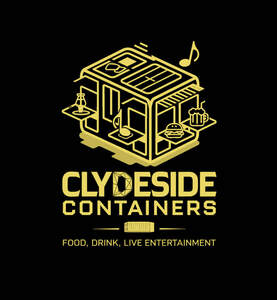

Trade Mark Journal No.2025/047 21 November 2025
UK00004292358 10 November 2025 (9,25,35,38,39,41,43)

- Class 9
- Digital recording media; Digital data recording media; Blank digital recording media; Optical recording media; Blank analogue recording media; Digital storage media; Electronic magnetic recording media; Digital recordings; Optical data recording media; Digital media streaming devices; Magnetic data recording media; Digital video recorders; Digital audio tapes; Audio digital tapes; Blank digital storage media; Digital audio recorders; Recorded media; Computer software for the display of digital media; Digital audio tape recorders; Covers for digital media players; Digital video cameras; Digital video discs; Digital video disc recorders; Digital audio tape players; Audio digital discs; Blank digital audio tapes; Prerecorded digital audio tapes; Digital video players; Digital audio players; Electronic publications recorded on computer media; Cases for digital media players; Electronic storage media; Digital cameras; Digital voice recorders; Digital audio servers; Digital music players; Portable digital audio broadcasting radios; Programmable digital television recorders; Digital music downloadable from the Internet; Digital video disc players; Media streaming software; DMB (Digital Multimedia Broadcasting) televisions; Digital video servers; Electronic data storage media; Downloadable digital music; Digital audio interface apparatus; Optical data media; Data media (Optical -); Computer application software for streaming audio-visual media content via the internet; Blank analogue storage media; Electronic databases recorded on computer media; Multi-media recordings; Media software; Media and publishing software; Computer hardware for routing audio, video, and digital signals; Portable digital audio broadcasting [DAB] radios; Keypads for routing audio, video, and digital signals; Downloadable media; Digital telephone platforms and software; Switchers for routing audio, video, and digital signals; Audio recording apparatus; Digital electronic controllers; Computer software for processing digital music files; Digital video disc drives; Digital signage; Software for processing digital images; Digital cameras for industrial use; Digital music downloadable provided from the internet; Digital video discs [DVDs]; Audio recording equipment; Analogue to digital converters; Digital to analogue converters; Optical data storage media; Media content; Digital televisions; Digital still cameras; Information technology and audio-visual, multimedia and photographic devices; Routers for routing audio, video, and digital signals; Video cameras for broadcasting.
- Class 25
- Clothing; Knitwear [clothing]; Jackets [clothing]; Ready-to-wear clothing; Woolen clothing; Linen clothing; Headbands [clothing]; Headbands for clothing; Gloves [clothing]; Gloves as clothing; Clothes; Aprons [clothing]; Jerseys [clothing]; Kerchiefs [clothing]; Denims [clothing]; Shorts [clothing]; Silk clothing; Parts of clothing, footwear and headgear; Knitted clothing; Hoods [clothing]; Windproof clothing; Embroidered clothing; Wristbands [clothing]; Belts [clothing]; Belts for clothing; Waterproof clothing; Casual clothing; Rainproof clothing; Visors [clothing]; Ready-made clothing; Clothing for leisure wear; Infant clothing; Woven clothing; Clothing for sports; Sports clothing; Leisure clothing; Clothing for children; Clothing for babies; Tops [clothing]; Clothing for infants; Clothing for cycling; Weatherproof clothing; Pockets for clothing; Water-resistant clothing; Fabric belts [clothing]; Handwarmers [clothing]; Beach clothing; Thermal clothing; Clothing for skiing; Men's clothing; Dance clothing.
- Class 35
- Digital marketing; Sales promotion using audiovisual media; Promotional marketing services using audiovisual media; Advertising via electronic media and specifically the internet; Producing promotional videotapes, video discs, and audio visual recordings.
- Class 38
- Digital audio broadcasting; Mobile media services in the nature of electronic transmission of entertainment media content; Transmission of digital audio and video broadcasts over a global computer network; Digital transmission services for audio and video data; Audio, video and multimedia broadcasting via the Internet and other communications networks; Streaming of audio, visual and audiovisual material via a global computer network; Interactive transmission of video over digital networks; Video transmission via digital networks; Delivery of digital audio and/or video by telecommunications; Broadcasting of audiovisual and multimedia content via the Internet; Transmission of messages using electronic media; Distribution of data or audio visual images via a global computer network or the internet; Delivery of digital music by telecommunications; Communications via analogue and digital computer terminals; Broadcasting of video and audio programming over the Internet; Digital communications services.
- Class 39
- Food delivery services; Delivery of hampers containing food and drink; Delivery of food and drink prepared for consumption.
- Class 41
- Providing facilities for entertainment; Hospitality services (entertainment); Educational and entertainment services, namely, providing motivational speaking services; Wine tasting services (education); Wine tastings [entertainment services]; Provision of entertainment services for children; Entertainment services provided for children; Digital video, audio and multimedia entertainment publishing services; Providing digital music from the internet; Audio, film, video and television recording services; Audio and video recording services; Audio recording studio services; Provision of audio and visual media via communications networks; Recording of music; Music recording; Recording, film, video and television studio services; Audio recording services; Music publishing and music recording services; Audio, video and multimedia production, and photography; Recording studio services for television; Sound recording and video entertainment services; Music recording studio services; Video recording services; Providing digital sound recordings, not downloadable, from the internet; Audio recording and production; Provision of entertainment services through the media of audio tapes; Entertainment services for sharing audio and video recordings; Online digital publishing services; Leasing of interactive and digital compression television equipment; Audio recording and production services; Production of video and audio recordings.
- Class 43
- Services for providing food and drink; Services for providing drink; Providing drink services; Providing food and drink; Providing of food and drink; Services for providing food; Services for the provision of food and drink; Catering services for the provision of food and drink; Charitable services, namely providing food and drink catering; Providing food and beverages; Hospitality services [food and drink]; Services for the preparation of food and drink; Food and drink preparation services; Providing food and drink for guests; Providing food and drink catering services for exhibition facilities; Providing food and drink catering services for convention facilities; Take-away food and drink services; Club services for the provision of food and drink; Takeaway food and drink services; Providing food and drink catering services for fair and exhibition facilities; Providing food and drink in bistros; Catering for the provision of food and drink; Providing food and drink for guests in restaurants; Food reviewing services [provision of information about food and drinks]; Providing food and drink in Internet cafes; Provision of food and drink; Consultancy services in the field of food and drink catering; Catering services for the provision of food; Catering for the provision of food and beverages; Information, advice and reservation services for the provision of food and drink; Provision of food and drink in restaurants; Providing food and drink in doughnut shops; Providing food and drink in restaurants and bars; Provision of food and beverages; Food and drink catering; Catering of food and drink; Catering (Food and drink -); Providing restaurant services; Restaurant services for the provision of fast food; Take-away food services; Food preparation services; Food and drink catering for institutions; Take away food and drink services; Catering of food and drinks; Corporate hospitality (provision of food and drink); Takeaway food services; Providing of food and drink via a mobile truck; Serving food and drinks; Serving food and drink for guests; Wine tasting services (provision of beverages); Take-away fast food services; Serving food and drink for guests in restaurants; Coffee supply services for offices [provision of beverages]; Preparation and provision of food and drink for immediate consumption; Consultancy services relating to food; Providing food to needy persons [charitable services]; Preparation of food and drink; Provision of information relating to the preparation of food and drink; Serving food and drink in Internet cafes; Contract food services; Food and drink catering for banquets; Catering services for providing Spanish cuisine; Night club services [provision of food]; Catering services for providing Japanese cuisine; Charitable services, namely, providing food to needy persons; Preparation of food and beverages; Consultancy services relating to food preparation; Catering services for providing European-style cuisine; Food and drink catering for cocktail parties; Serving food and drink in restaurants and bars; Providing information about restaurant services; Serving food and drink in doughnut shops; Take away food services; Providing information in the nature of recipes for drinks; Providing guesthouse services; Providing information about bar services; Office catering services for the provision of coffee; Restaurant information services; Providing information about temporary accommodation services; Restaurant services.
Caroline Helen Robinson